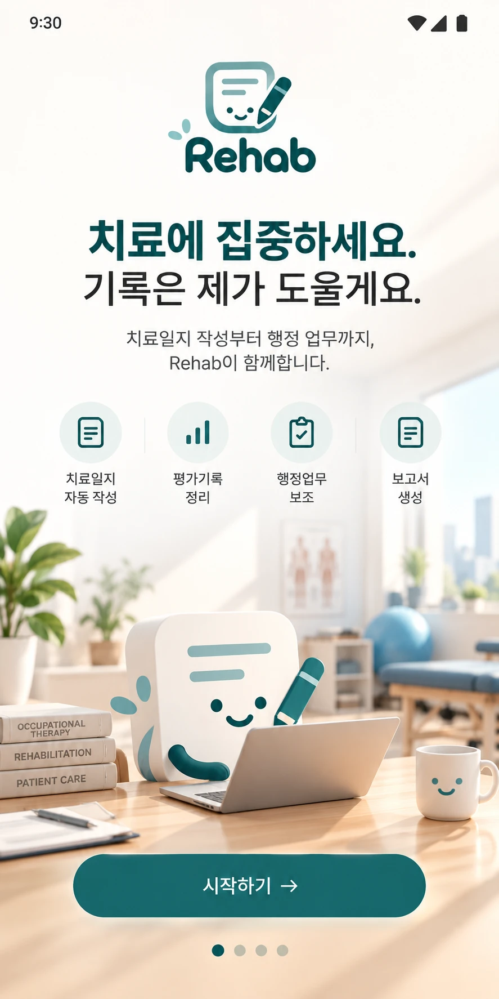
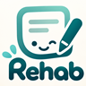
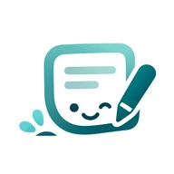

AI가 기록을 정리하다 애매했던 부분이에요. 탭해서 답하면 한 번에 마무리돼요.
복사해서 EMR에 바로 붙여 넣으세요. 아래에서 환자별로 복사할 수도 있어요. 개인정보 보호를 위해 메신저로 보내기는 하지 않아요.
직무에 맞는 평가도구와 일지 양식으로 시작해요. 설정에서 언제든 바꿀 수 있어요.
🏥 병원
🧸 아동발달센터
환자 이름·등록번호는 앱에 저장하지 않아요. 모든 기록은 이 휴대폰 안에만 있어요.
병원
아동발달센터
여러 센터에 나가면 센터마다 수당을 따로 정해요. 아동마다 근무 센터를 고르면 그 수당으로 계산해요.
아직 아무것도 적지 않은 날부터 새 칸으로 바뀌어요.
개인 휴대폰 번호보다 치료실 번호를 권해요.
파일은 비밀번호로 잠겨요. 비밀번호를 잊으면 복원할 수 없어요. Google Drive나 PC에 보관하세요.